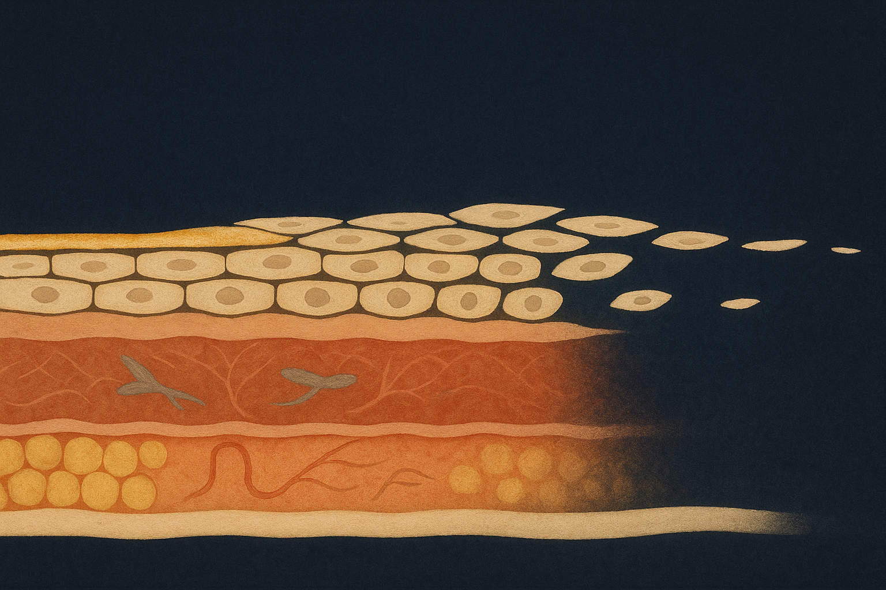
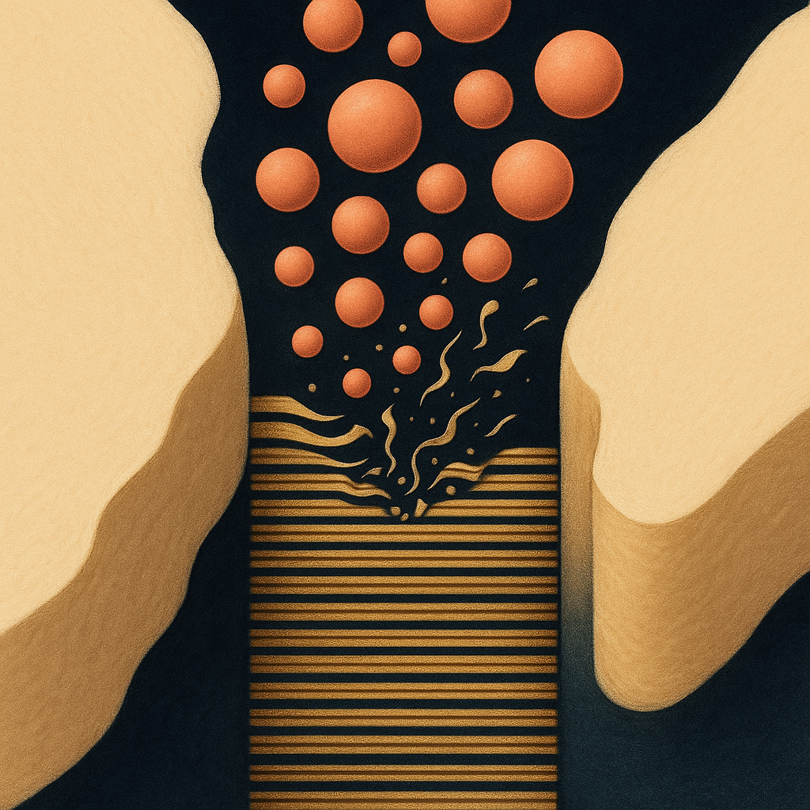
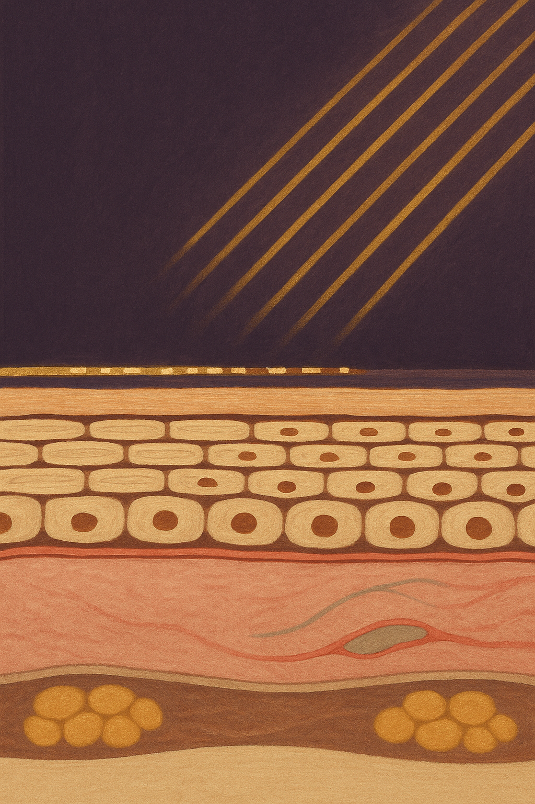

Review below. Reply approve to publish the Facebook post, or tell me edits.

Almost every piece of skincare advice you have read was written for the face. That makes sense: it is the tissue we look at most, and the one the category is built around. The trouble is that the advice does not travel, and the clearest example is sitting at the end of each of your arms.
The back of the hand is not a smaller, tougher version of your cheek. It is a structurally different tissue, exposed on a completely different schedule, and the changes that show up there are mostly not wrinkles at all. Once you can see those differences, the moves worth making become obvious. Most of them are cheap.
Skin is not one material laid evenly over the body. Thickness, gland density and the cushion underneath vary by site, and the hand holds two of the most extreme versions we have.
On the dorsum (the back of the hand), the dermis is thin and sits over almost no subcutaneous fat, and what cushion there is thins with time. Sebaceous glands, the ones producing your skin's own lipids, concentrate on the face, scalp, chest and upper back. On the back of the hand they are sparse.
Turn your hand over and you are at the opposite extreme. Palm skin carries a very thick stratum corneum (the outer layer built for load and friction), no sebaceous glands at all, and dense sweat glands. Built to grip, not to stay supple.
Same body. Three different tissues.
The everyday way to hold this: your face has a built-in supply of its own oils, topped up quietly all day. The back of the hand largely borrows them. Whatever lipid is sitting there arrived from somewhere else, from the rest of your skin or from what you applied this morning, and it is not being replenished at anything like the same rate. That one fact explains most of what follows.
A cleanser lifts oil, and it cannot tell the difference between the oil you want gone and the intercellular lipids holding your barrier together. Every surfactant wash takes a little of both and briefly shifts the surface chemistry. On its own that is unremarkable, because skin recovers. It just takes hours.
Frequency is the variable, not any single wash. Ten to twenty hand washes a day is ordinary for a parent, a nurse, a teacher or anyone who cooks. Each one starts a recovery the next one interrupts, and the deficit compounds by mid-afternoon. Two things make it worse and almost nobody weighs either: water temperature and contact time. Hot water and a long scrub strip more than a "harsh" soap used briefly in lukewarm water.
When people say their hands look older, they are usually describing three separate things bundled together. Separating them matters, because only one of the three responds to a cream.
Pigment. Discrete flat brown spots on the dorsum and forearms, accumulated from years of ordinary daylight. This is a pigment change, not a texture change, so a retexturing or firming cream is aimed at the wrong target. Prevention has far more leverage here than anything applied later.
Volume and translucency. As the thin fat layer reduces and the dermis loses density, the structures underneath read closer to the surface. Tendons look more prominent. Veins show more. This is a structural change, and no topical restores it. Saying so plainly is more useful than pretending otherwise.
Texture and dryness. Roughness, tightness, flaking, fine crepey surface lines, the odd split near a knuckle. This is the one that genuinely responds to what you do daily, often within a week or two.
One caveat worth stating once: anything changing, growing, bleeding or pigmented in an irregular way is a question for your GP, not for a routine. In Australia, that is worth saying and worth meaning.
The back of the hand takes a near-continuous daylight dose that never appears in anyone's mental tally. Hands sit on the steering wheel through every drive, and you can usually see it: hold your driving-side hand next to the other one in daylight and compare the backs. They hold the dog lead, the pegs at the washing line, the trowel in the garden. They are out in the open in every season, in a way only the face can match.
They are also the site most routines never reach: sunscreen goes on the face and maybe the neck, and the hands are what applied it.
Then the part almost nobody says out loud. Whatever you do put on your hands is removed at the next sink. Sunscreen on hands is not a morning decision. It is a reapplication problem.
Here is a free self-check that costs nothing but attention. Between now and dinner, keep a rough count of how many times you wash your hands. Then count how many times anything went back on afterwards. For most people the second number is zero. That gap, not a missing ingredient, is the real reason hand skin behaves the way it does.
Ranked, cheapest and highest impact first.
None of this is glamorous, and that is rather the point. The skin on the back of your hands takes the highest-frequency exposure of anywhere on your body and gets the least deliberate care, and closing that gap is placement and habit rather than a product you have not found yet.
Which of the three did you assume was a wrinkle: pigment, volume or texture?
Separate topic, but if you ever want a closer look at our light therapy mask, the full spec is here (a cosmetic device for face and neck, not medicine, and not for hands).
#skinscience #handcare #skinbarrier #sunprotection #skinhealth #skinlongevity

Count how many times you washed your hands today. Now count how many times you put anything back on them.
The back of the hand is thin skin over almost no cushion, and it has very few oil glands of its own. Your face makes its own lipids all day. The backs of your hands largely do not. Every wash lifts what little film is there and the rebuild takes hours, so it is the frequency that compounds, not any single wash.
Here is the part worth knowing. Two of the three changes people notice on hands are not lines. Flat pigment spots are a cumulative daylight story on a surface that is always out and never logged. The look of visible tendons and vessels is the fat cushion thinning underneath. Neither is a texture problem, which is why a richer cream changes the dryness and leaves the rest exactly as it was.
So, in order of leverage:
1. Move the hand cream to the sink, where the washing actually happens.
2. Treat sunscreen on the backs of your hands as something you redo after washing, not once in the morning.
3. Wear gloves for the washing up and the garden. Gloves beat any upgrade in product.
Full write-up on the blog: https://redermis.com.au/blogs/journal/why-your-hands-age-differently-to-your-face-and-what-actually-helps. Separate topic, but if you ever want a closer look at our light therapy mask, it is here: https://redermis.com.au/products/red-light-therapy-face-neck-mask (face and neck, not hands).
Curious where your routine actually stops: sink, handbag, car, or nowhere? Drop your real wash count in the comments, no rounding down.
## Hashtags
#skinhealth #handcare

Your face is washed twice a day. Your hands are washed closer to fifteen.
And two of the three changes people notice there are not lines at all.
It is different tissue. Thin skin, almost no fat cushion underneath, and very few oil glands of its own on the back of the hand.
Each wash lifts the lipid film. Recovery takes hours. Wash again before then and it compounds.
Flat pigment spots are a daylight story. Visible tendons and vessels are the cushion thinning, not the surface.
So a richer cream helps the dryness and the texture, and honestly does nothing for the other two.
Highest leverage, and the cheapest:
Keep the cream at the sink, not the bedside.
Redo sunscreen on your hands after washing, not just in the morning.
Gloves for the washing up.
Full write-up on the blog; separate topic, but if you want a closer look at our light therapy mask (face and neck, not hands), link in bio.
## Hashtags
#handcare #skinbarrier #skincaretips #pigmentation #ausskincare
## Title
Hand skin is not face skin: a free at-home skincare audit
## Description
The back of your hands is thin skin with almost no fat cushion and very few oil glands, taking 10 to 20 washes a day plus a daylight dose nobody logs.
Try this: hold your driving-side hand next to the other one in daylight.
Highest leverage: sunscreen on the backs of the hands, reapplied after washing, and a barrier cream kept by the sink.
## CTA
Separate topic, but if you want a closer look at our light therapy mask (face and neck, not hands), it is here: https://redermis.com.au/products/red-light-therapy-face-neck-mask
## Destination URL
https://redermis.com.au/blogs/journal/why-your-hands-age-differently-to-your-face-and-what-actually-helps
## Hashtags
#SkincareTips #HandCare #SkinBarrier #AntiAgingHands
Note: this pin reuses the Instagram image (instagram.png, 1024x1536, already Pinterest's native 2:3 pin ratio), with no text overlay. There is no Pinterest image prompt by design. The Destination URL is the handle Shopify auto-generates from the blog title, so it resolves only once the 2026-09-13 article is published; until then, use the article URL printed by publish-blog.py.